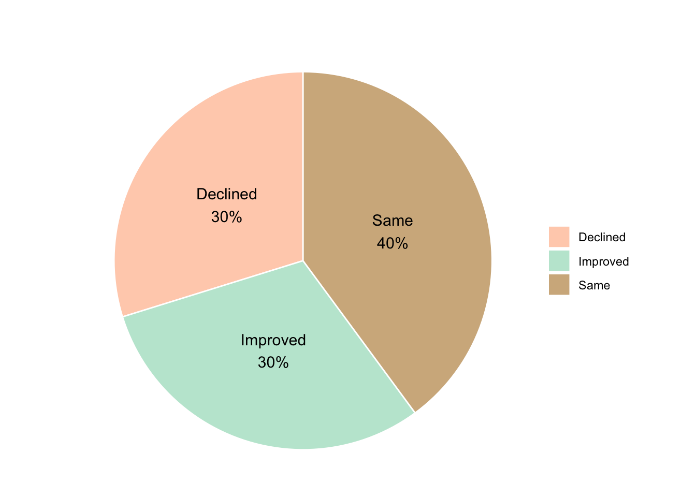

data <-read_csv("Student Mental Health Analysis During Online Learning.csv")head(data,3)
# A tibble: 3 × 10
Name Gender Age `Education Level` `Screen Time (hrs/day)`
<chr> <chr> <dbl> <chr> <dbl>
1 Aarav Male 15 Class 8 7.1
2 Meera Female 25 MSc 3.3
3 Ishaan Male 20 BTech 9.5
# ℹ 5 more variables: `Sleep Duration (hrs)` <dbl>,
# `Physical Activity (hrs/week)` <dbl>, `Stress Level` <chr>,
# `Anxious Before Exams` <chr>, `Academic Performance Change` <chr>
1 Methodology
This study applied multinomial logistic regression to evaluate the association between multiple independent variables and a categorical outcome with three levels: “Same”, “Increase”, and “Decrease”. The independent variables used in the model were a combination of numerical (e.g., age, screen time) and categorical predictors (e.g., gender, education level).
This method is appropriate when the response variable is nominal with more than two categories and does not follow a natural order. The “Same” category was treated as the reference level in this model.
Prior to model fitting, standard preprocessing steps were applied, including checking for missing values, standardizing numerical variables, and encoding categorical variables into dummy indicators to enable their use in the model.
The regression model estimates the log-odds of each non-reference category relative to the reference category. Separate sets of coefficients are produced for predicting “Increase” and “Decrease” outcomes compared to “Same”. The model was estimated using maximum likelihood estimation.
The output of the model included regression coefficients, standard errors, and p-values for each predictor variable across both comparisons. The significance of each variable was evaluated using Wald tests, with a threshold of p < 0.05 considered statistically significant. This approach allowed for identifying which variables had a meaningful association with changes in the response category.
This methodology provided a clear framework for determining the statistical significance of each predictor and contributed to understanding the factors associated with outcome variations in the study population.
Summary Data
# If "Name" is one of the column names, remove it before summarisingdata_summary <- data[ , colnames(data) !="Name"]# Create summary vector for remaining variablessummary_vec <-sapply(data_summary, function(x) {if (is.numeric(x)) {paste0(min(x, na.rm =TRUE), " – ", max(x, na.rm =TRUE)) } else {paste(unique(x), collapse =", ") }})# Create summary table and add a blank 'Name' row at the topsummary_table <-data.frame(Variable =names(summary_vec),Value = summary_vec,stringsAsFactors =FALSE)summary_table <-rbind(data.frame(Variable ="Name", Value ="", stringsAsFactors =FALSE), summary_table)# Remove column namescolnames(summary_table) <-c("", "")# Display clean 2-column table (no headers, no row names)knitr::kable(summary_table, caption ="Summary of Variables", row.names =FALSE)
Table 1: Data Set Description
Summary of Variables
Name
Gender
Male, Female, Other
Age
15 – 26
Education Level
Class 8, MSc, BTech, BA, Class 11, MTech, Class 9, Class 10, MA, BSc, Class 12
Screen Time (hrs/day)
2 – 12
Sleep Duration (hrs)
4 – 9
Physical Activity (hrs/week)
0 – 10
Stress Level
Medium, High, Low
Anxious Before Exams
No, Yes
Academic Performance Change
Same, Improved, Declined
Data Exploration: Chart for Categorical Variables
# Define custom colors for the categoriesbase_colors <-c("Declined"="#FFD1BA", # light orange-pink"Improved"="#C0E7D5", # light green"Same"="#D2B48C"# tan/brown)# Create pie chartdata %>%drop_na(`Academic Performance Change`) %>%count(`Academic Performance Change`) %>%mutate(prop = n /sum(n),label =paste0(`Academic Performance Change`, "\n", percent(prop, accuracy =1)) ) %>%ggplot(aes(x ="", y = prop, fill =`Academic Performance Change`)) +geom_col(width =1, color ="white") +coord_polar(theta ="y") +geom_text(aes(label = label), position =position_stack(vjust =0.5), size =4) +scale_fill_manual(values = base_colors) +# Apply custom colourlabs(title ="",x =NULL, y =NULL, fill =NULL ) +theme_void()

Figure 1: Proportion of Student based on Academic Performance
Most students either maintained or improved their academic performance, with only 30% reporting a decline. This reflects a mixed impact of the learning environment, where some students thrived while others struggled.
2 Analysis
2.1 Data Exploration and Preprocessing
Change the Variables Name
data <- data |>rename(Screen_Time =`Screen Time (hrs/day)`,Stress_Level =`Stress Level`,Sleep_Duration =`Sleep Duration (hrs)`,Physical_Activity =`Physical Activity (hrs/week)`,Education_Level =`Education Level`,Anxious_Before_Exams =`Anxious Before Exams`,Academic_Performance_Change =`Academic Performance Change`)colnames(data)
Age Screen_Time Sleep_Duration Physical_Activity
Min. :15.00 Min. : 2.000 Min. :4.000 Min. : 0.000
1st Qu.:17.00 1st Qu.: 4.400 1st Qu.:5.100 1st Qu.: 2.600
Median :20.00 Median : 6.900 Median :6.500 Median : 5.000
Mean :20.34 Mean : 6.909 Mean :6.451 Mean : 5.018
3rd Qu.:23.00 3rd Qu.: 9.500 3rd Qu.:7.700 3rd Qu.: 7.600
Max. :26.00 Max. :12.000 Max. :9.000 Max. :10.000
Figure 2: Summary of Students Proportion based on Categorical Variables
The charts show that 51% of students reported feeling anxious before exams. Most participants were enrolled in Master’s programs (41%), followed by Bachelor (23%), High School (22%), and Middle School (14%). The gender distribution was balanced between male and female (both 48%), with 5% identifying as “Other.” Regarding stress levels, 49% experienced medium stress, 33% low stress, and 18% high stress.
Figure 3: Performance Outcome Breakdown by Categorical Variables
There is no notable difference in academic performance change across groups based on exam anxiety, gender, or stress level, as the proportions of declined, improved, and unchanged performance remain relatively similar. The program appears to perform well for Master’s and Bachelor of Arts students, with a higher proportion maintaining or improving performance. However, among high school and middle school students, the program is less effective, as most classes show a greater proportion of declining academic performance compared to improvement.
Performance Outcome Breakdown by Categorical Variables
There is no distinct pattern that classifies academic performance change based on the observed continuous variables. For example, students with less screen time or more physical activity are not consistently associated with improved performance. Correlation values across age, screen time, sleep duration, and physical activity remain weak, suggesting no strong relationship with performance outcomes.
Compared to students whose performance remained the same, Class 10 students experienced a significantly higher rate of academic decline (p = 0.027). This suggests that the decline in performance was most prominent among Class 10 students.
 This study applied multinomial logistic regression to evaluate the association between multiple independent variables and a categorical outcome with three levels: “Same”, “Increase”, and “Decrease”. The independent variables used in the model were a combination of numerical (e.g., age, screen time) and categorical predictors (e.g., gender, education level).
This study applied multinomial logistic regression to evaluate the association between multiple independent variables and a categorical outcome with three levels: “Same”, “Increase”, and “Decrease”. The independent variables used in the model were a combination of numerical (e.g., age, screen time) and categorical predictors (e.g., gender, education level). This method is appropriate when the response variable is nominal with more than two categories and does not follow a natural order. The “Same” category was treated as the reference level in this model.
This method is appropriate when the response variable is nominal with more than two categories and does not follow a natural order. The “Same” category was treated as the reference level in this model.